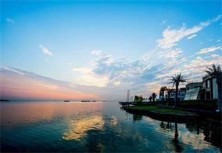

湖州太湖
太湖位于长江三角洲的南缘，古称震泽、具区，又名五湖、笠泽，是中国五大淡水湖之一，界北纬30°55'40"~31°32'58"和东经119°52'32"~120°36'10"之间，横跨江、浙两省，北临无锡，南濒湖州，西依宜兴，东近苏州。太湖湖泊面积2427.8平方公里，水域面积为2338.1平方公里，湖岸线全长393.2公里。其西和西南侧为丘陵山地，东侧以平原及水网为主。太湖地处亚热带，气候温和湿润，属季风气候。太湖河港纵横，河口众多，有主要进出河流50余条。太湖水系呈由西向东泄泻之势，平均年出湖径流量为75亿立方米，蓄水量为44亿立方米。太湖岛屿众多，有50多个，其中18个岛屿有人居住。
湖州欢迎您